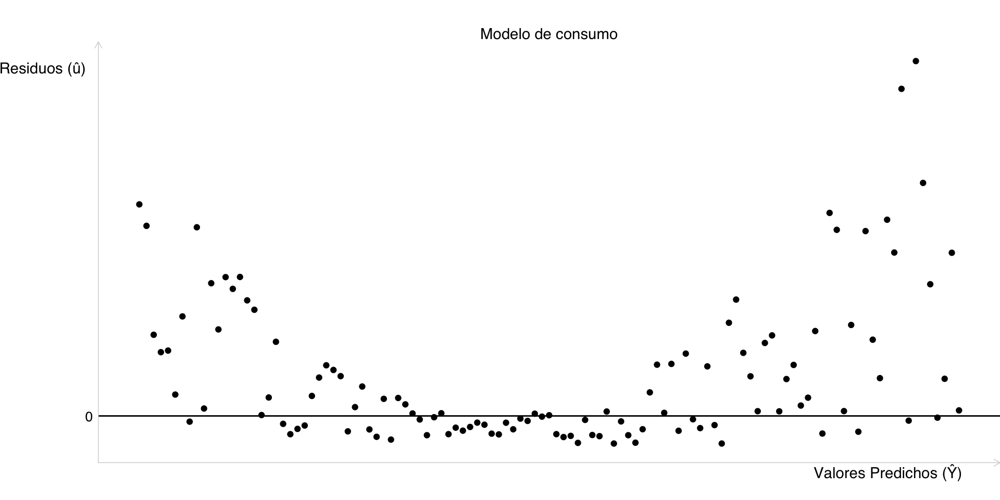
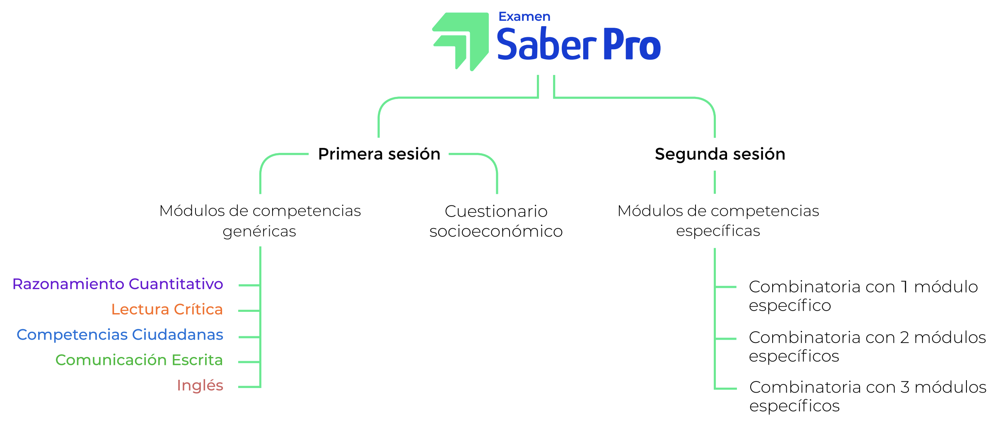
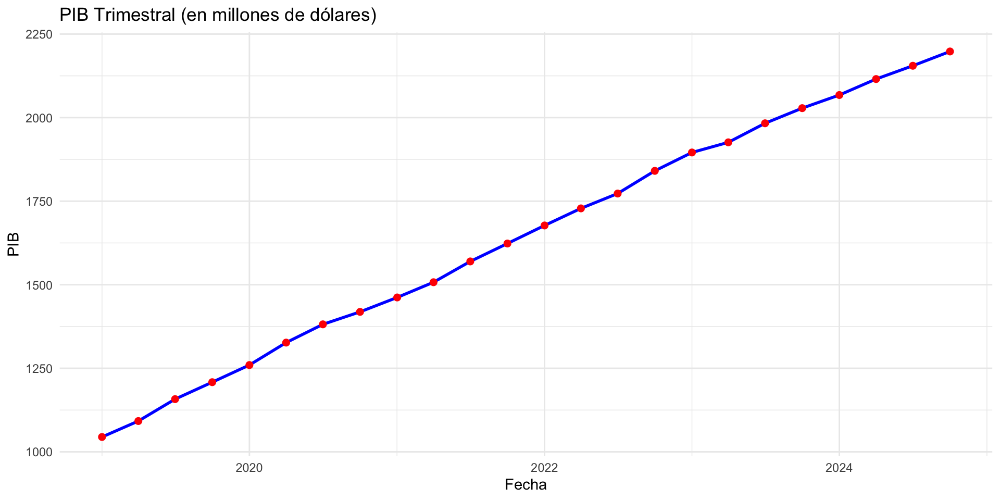

![]()

Saber Pro: Análisis Económico
Departamento de Economía
September 7, 2025
🚀
¡Bienvenido(a)s! ✨
Introducción
Referente a este módulo, yo considero que usted:
- Ya es un poco mas maduro(a)
- Le gustan los retos
- Recuerda algo de Econometría
- El Saber Pro es fundamental porque evalúa las competencias de los individuos. A través de las preguntas, los participantes deben demostrar su capacidad para aplicar conocimientos en diversas situaciones, comprendiendo conceptos económicos, utilizando herramientas cuantitativas para la solución de problemas y explicando fenómenos económicos a partir de teorías relevantes. Esto permite a los evaluados familiarizarse y conocer aún más la prueba.
El día de la prueba se organiza así:

Recomendaciones
¡Siéntase seguro(a) de sí mismo(a)!
No estudie un día antes ni la semana antes 😇
Lea dos veces sin estar pendiente del tiempo, focalice su objetivo -> 💯
Usted es más que una prueba. Usted ya es todo(a) un(a) profesional!!🔝
Competencias ♣️
Competencias evaluadas
Competencias génericas
Este módulo mide habilidades transversales esenciales para el desempeño profesional y ciudadano, independientemente del programa académico.
Comunicación Escrita
Este módulo evalúa la competencia para comunicar ideas por escrito referidas a un tema dado. Específicamente, el estudiante debe producir un texto argumentativo en el que justifique su respuesta al problema planteado en el enunciado de la pregunta.
Lectura crítica
Este módulo evalúa tres competencias. Las dos primeras se refieren a la comprensión del contenido de un texto, ya sea a nivel local o global, y la tercera, a la aproximación propiamente crítica frente al texto.
Otro poco mas de esto
Razonamiento cuantitativo
Este módulo evalúa el conjunto de elementos de las matemáticas (sean estos conocimientos o competencias) que permiten a un ciudadano tomar parte activa e informada en el contexto social, cultural, político, administrativo, económico, educativo y laboral.
Competencias ciudadanas
En este módulo se evalúan aquellas habilidades cognitivas, emocionales y comunicativas que, integradas entre sí y relacionadas con conocimientos y actitudes, hacen posible que el ciudadano actúe de manera constructiva en la sociedad.
Inglés
Este módulo evalúa la competencia para comunicarse efectivamente en inglés en un nivel básico.
Detalles
Detalles generales
Cada módulo contiene alrededor de 35 preguntas por componente, siendo el de Inglés el que más tiene (≈55). También hay preguntas generales para conocer de usted mismo/a. Los verbos más importantes son identifica y comprende.
Competencias específicas
Comprende las diferentes herramientas cuantitativas que permiten el planteamiento de un problema económico y su solución.
Economía
Un módulo específico que contiene preguntas de Macroeconomía, Microeconomía, Econometría, Estadística e incluso Pensamiento e historia económica.
Son aproximadamente 50 preguntas de opción múltiple con única respuesta.
Reglas de este simulacro 🎲
Reglas
📌 1. Reglas para la sesión en Teams con polls
- Todos los estudiantes deben responder!!
- Se dará una tolerancia máxima de 5 minutos por respuesta.
- Mantengase identificado(a) todo el tiempo.
- Micrófonos apagados en el momento de la pregunta.
- Activar micrófono solo cuando se les dé la palabra.
- Cada estudiante debe responder en el poll en el tiempo asignado (no se permiten respuestas múltiples o fuera de tiempo).
- Los resultados serán usados como insumo de retroalimentación, no para calificación.
- Prohibido compartir pantallas o distraer al grupo sin autorización.
- Se espera actitud de simulacro serio, como en la prueba Saber PRO.
➕
Pregunta 1
Contexto: Un econometrista está construyendo un modelo de regresión lineal múltiple para analizar los factores que influyen en el consumo de un hogar. Ha incluido variables como el ingreso del hogar, el tamaño del hogar y el número de adultos empleados. Durante el análisis, el investigador detecta una alta correlación entre el ingreso del hogar y el número de adultos empleados.
Pregunta: De acuerdo con el Modelo de Regresión Lineal (MRL) y el supuesto de no multicolinealidad, ¿cuál de las siguientes afirmaciones describe una consecuencia teórica de la alta correlación entre las variables explicativas mencionadas?
Opciones de Respuestas
A. Los estimadores de Mínimos Cuadrados Ordinarios (MCO) de los coeficientes serán sesgados e inconsistentes.
B. El coeficiente de determinación (R-cuadrado) del modelo será significativamente bajo.
C. La matriz de diseño del modelo generará un rango incompleto, dificultando la estimación precisa de los efectos individuales de las variables.
D. Los errores del modelo exhibirán autocorrelación, afectando la eficiencia de los estimadores.
Pregunta 2
Contexto: Un investigador estima un modelo de regresión lineal para explicar el gasto anual de los hogares en bienes duraderos (como electrodomésticos) en función del ingreso anual del hogar y el tamaño del hogar. Después de estimar el modelo utilizando Mínimos Cuadrados Ordinarios (MCO), el investigador realiza un análisis de los residuos. Al graficar los residuos frente a los valores predichos del gasto, el investigador observa que la variabilidad de los residuos aumenta sistemáticamente a medida que aumenta el gasto predicho.
Pregunta: A partir de esta observación, ¿qué supuesto del Modelo de Regresión Lineal (MRL) se está violando y cuál es la principal implicación de esta violación para la inferencia estadística del modelo?
Opciones de Respuestas
A. Se viola el supuesto de heteroscedasticidad. Como resultado, los estimadores MCO son sesgados, pero sus varianzas son correctas, lo que invalida las pruebas de hipótesis.
B. Se viola el supuesto de homoscedasticidad. Como resultado, los estimadores MCO siguen siendo insesgados y consistentes, pero sus errores estándar son incorrectos, lo que lleva a que las pruebas de significancia y los intervalos de confianza sean inválidos.
C. Se viola el supuesto de no autocorrelación. Como resultado, los estimadores MCO son insesgados y eficientes, pero la predicción del modelo no es óptima.
D. Se viola el supuesto de no multicolinealidad. Como resultado, los estimadores MCO son inconsistentes, y los errores estándar de los coeficientes son erróneamente pequeños.
Pregunta 3
Enunciado: Un equipo de analistas de mercado está investigando los factores que influyen en las ventas diarias de un producto específico. Para ello, han propuesto el siguiente modelo de regresión lineal: \[ Ventas_t = \beta_0 + \beta_1*\text{Precio Producto}_t + \beta_2*\text{Publicidad}_t + \beta_3*\text{Precio Competencia}_t + \beta_4*\text{Ingreso Hogares}_t + ε_t \] Donde: \(Ventas_t\): ventas diarias del producto en el período t. \(\text{Precio Producto}_t\): precio del propio producto en el período t. \(\text{Publicidad}_t\): inversión en publicidad en el período t. \(\text{Precio Competencia}_t\): precio del producto de la competencia en el período t. \(\text{Ingreso Hogares}_t\): ingreso promedio de los hogares de la región en el período t. \(ε_t\): término de error.
Los analistas sospechan que las variables Precio Competencia y Ingreso Hogares no tienen un efecto significativo conjunto sobre las ventas. Para probar esta hipótesis, deciden utilizar una prueba F, comparando un modelo restringido con uno no restringido.
¿Cuál de las siguientes formulaciones de hipótesis es la más adecuada para evaluar si Precio Competencia y Ingreso Hogares tienen un efecto significativo conjunto sobre las ventas?
Opciones de Respuestas
A. H0: β3 = 0, H1: β3 ≠ 0
B. H0: β4 = 0, H1: β4 ≠ 0
C. H0: β3 = 0 y β4 = 0, H1: al menos uno de β3 o β4 es diferente de cero.
D. H0: β3 ≠ 0 y β4 ≠ 0, H1: β3 = 0 y β4 = 0
Pregunta 4
Enunciado: Un econometrista ha estimado un modelo de regresión lineal y, como parte del diagnóstico, ha generado el siguiente gráfico de los residuos (û) frente a los valores predichos (Ŷ) del modelo:
De acuerdo con la gráfica, ¿qué supuesto del Modelo de Regresión Lineal Clásico (MRLC) se está incumpliendo?
Opciones de Respuestas
A. Homoscedasticidad.
B. Normalidad de los errores.
C. No autocorrelación de los errores.
D. Ausencia de multicolinealidad.
Pregunta 5
Enunciado: Un econometrista está analizando la serie temporal mensual del índice de precios al consumidor (IPC) de un país y observa que, a lo largo de décadas, la serie muestra una tendencia creciente y que las perturbaciones no parecen desvanecerse rápidamente, sino que persisten en el tiempo. Esta observación le sugiere que el IPC podría no ser estacionario y que un shock en un momento dado podría tener efectos permanentes.
¿Qué tipo de prueba estadística es la más adecuada para determinar si la serie del IPC tiene una raíz unitaria y, por lo tanto, no es estacionaria en media?
Opciones de Respuestas
A. Prueba de Durbin-Watson para autocorrelación.
B. Prueba de White para heteroscedasticidad.
C. Prueba de Dickey-Fuller Aumentada (ADF).
D. Prueba de Breusch-Pagan para heteroscedasticidad.
Pregunta 6
Enunciado: Un econometrista ha estimado un modelo de regresión de series de tiempo y, como parte fundamental del diagnóstico del modelo, está verificando las propiedades de los residuos (\(\hat{u}_t\)). Para que el modelo sea considerado bien especificado y los estimadores de Mínimos Cuadrados Ordinarios (MCO) sean eficientes y permitan una inferencia válida, los residuos deben comportarse idealmente como un proceso de ruido blanco.
¿Cuál de las siguientes es una característica fundamental que deben cumplir los errores de un proceso de ruido blanco?
Opciones de Respuestas
A. La varianza de los errores (\(\hat{u}_t\)) es creciente en el tiempo (heteroscedasticidad).
B. La media de los errores (\(\hat{u}_t\)) es una función lineal de las variables explicativas.
C. La distribución de los errores (\(\hat{u}_t\)) debe ser necesariamente normal.
D. Los errores (\(\hat{u}_t\)) no presentan autocorrelación serial.
Pregunta 7
Enunciado: Un equipo de investigadores desea analizar el impacto de ciertas políticas de incentivos fiscales en la inversión empresarial. Para ello, recopilan datos anuales durante 10 años sobre la inversión, los beneficios, el tamaño y si la empresa recibió o no incentivos fiscales, para una muestra de 500 empresas manufactureras en un país. Los investigadores están preocupados por la existencia de características no observadas y persistentes a nivel de cada empresa (como la calidad de la gerencia o la cultura organizacional) que podrían estar correlacionadas con las variables explicativas y la inversión, sesgando los resultados de un análisis de corte transversal o de series de tiempo puras.
¿Qué ventaja principal ofrece el uso de un modelo con datos de panel longitudinal (como el de efectos fijos) para abordar esta preocupación?
Opciones de Respuestas
A. Controla por características no observadas, específicas de cada entidad, que son constantes en el tiempo y que podrían sesgar las estimaciones.
B. Facilita la identificación de la heteroscedasticidad, pero no resuelve el problema de las características no observadas.
C. Permite la estimación de la causalidad entre variables con una única observación por entidad.
D. Simplifica el análisis al reducir el número de observaciones, lo que mejora la eficiencia de los estimadores MCO.
Pregunta 8
Enunciado: Un economista está analizando los datos trimestrales del Producto Interno Bruto (PIB) de un país durante los últimos 5 años (2020-2024). Su objetivo es identificar tendencias y patrones estacionales para realizar predicciones sobre el comportamiento futuro del PIB.
Supongamos que el análisis inicial del economista revela un gráfico de series de tiempo del PIB trimestral (en millones de dólares) con las siguientes características:

Pregunta: Considerando la descripción del gráfico del PIB trimestral para el período 2020-2024, ¿cuál de las siguientes afirmaciones es correcta sobre la tendencia general observada?
Opciones de Respuestas
A. El PIB muestra una tendencia decreciente, ya que las fluctuaciones trimestrales son muy marcadas.
B. El PIB presenta una tendencia constante, dado que sus valores oscilan de forma predecible alrededor de un promedio fijo.
C. La pronunciada estacionalidad impide identificar con claridad cualquier tendencia a largo plazo en el PIB.
D. El PIB evidencia una tendencia creciente a lo largo del período, la cual se superpone a patrones de estacionalidad anual.
Pregunta 9
Enunciado: Un equipo de investigación de una universidad está realizando un estudio sobre los determinantes de la tasa de criminalidad en las principales ciudades de un país. Para ello, recopilaron datos de corte transversal para 60 ciudades en el año 2023. La variable dependiente es la Tasa de Criminalidad (medida como el número de delitos por cada 100.000 habitantes). Las variables explicativas incluyen:
- Tasa de Pobreza (en porcentaje): Proporción de la población de la ciudad que vive bajo la línea de pobreza.
- Nivel de Educación (años promedio de escolaridad): Años promedio de escolaridad de los adultos en la ciudad.
- Gasto en Seguridad per cápita (en miles de pesos): Inversión municipal en seguridad por habitante.
El equipo estimó el siguiente modelo de regresión lineal múltiple por Mínimos Cuadrados Ordinarios (MCO), obteniendo los resultados que se presentan a continuación:
| Variable Independiente | Coeficiente Estimado | Error Estándar | Valor p |
|---|---|---|---|
| (Intercepto) | 85.30 | 12.50 | 0.001 |
| Tasa de Pobreza | 2.15 | 0.58 | 0.003 |
| Nivel de Educación | -3.20 | 0.85 | 0.001 |
| Gasto en Seguridad per cápita | -0.75 | 0.60 | 0.215 |
Pregunta: Basándose en los resultados del modelo de regresión lineal presentado, ¿cuál de las siguientes afirmaciones es la interpretación más adecuada y estadísticamente correcta del coeficiente de la variable “Tasa de Pobreza”?
Opciones de Respuestas
A. Por cada aumento de un punto porcentual en la Tasa de Pobreza, la Tasa de Criminalidad disminuye en 2.15 delitos por cada 100.000 habitantes, manteniendo las demás variables constantes.
B. Un aumento de un punto porcentual en la Tasa de Pobreza se asocia con un incremento de 2.15 delitos por cada 100.000 habitantes en la Tasa de Criminalidad, manteniendo constantes el Nivel de Educación y el Gasto en Seguridad per cápita, y este efecto es estadísticamente significativo.
C. La Tasa de Pobreza no tiene un efecto estadísticamente significativo sobre la Tasa de Criminalidad, porque su coeficiente es menor que el del Nivel de Educación.
D. La Tasa de Pobreza es una variable endógena y, por lo tanto, su coeficiente no puede ser interpretado en este modelo de corte transversal.
Pregunta 10
Enunciado: Un país exportador de materias primas se encontraba en una situación de equilibrio externo hasta hace cinco años. A partir de ese momento, una devaluación real de su tasa de cambio mejoró considerablemente su balanza en cuenta corriente. Un analista económico ha concluido que la razón por la cual esta devaluación hizo superavitaria la cuenta corriente radica en que la cantidad demandada de exportaciones y de importaciones ha sido suficientemente sensible a la variación en la tasa de cambio real.
Pregunta: Según lo anterior, ¿cuál de los siguientes modelos económicos es el más útil para entender el desequilibrio externo de este país y la efectividad de la devaluación real?
Opciones de Respuestas
A. El modelo clásico del comercio internacional.
B. El modelo keynesiano de determinación del ingreso.
C. El modelo de elasticidades de Marshall-Lerner.
D. El modelo de switching de la balanza de pagos.
Respuestas a las preguntas 🎲
Respuesta 1
Respuesta:
-> ✅ C❗️
La multicolinealidad severa implica que las columnas de la matriz de variables explicativas están linealmente relacionadas, lo que puede llevar a una matriz de rango incompleto o casi incompleto, haciendo difícil o imposible invertir la matriz \((X'X)\) y, por lo tanto, estimar los coeficientes individuales de manera precisa. Esto resulta en errores estándar muy grandes para los coeficientes, lo que a su vez amplía los intervalos de confianza.
Respuesta 2
Respuesta:
-> ✅ B❗️
Los estimadores de Mínimos Cuadrados Ordinarios (MCO) siguen siendo insesgados y consistentes incluso en presencia de heteroscedasticidad. Esto significa que, en promedio, los estimadores de MCO aún dan el valor verdadero del parámetro si la muestra es grande.
- Sin embargo, los estimadores MCO dejan de ser eficientes (ya no son los Mejores Estimadores Lineales Insesgados, MELI).
- Lo más crítico para la inferencia es que los errores estándar calculados por MCO son incorrectos.
Respuesta 3
Respuesta:
-> ✅ C❗️
Es la correcta porque formula la hipótesis nula como β3 = 0 y β4 = 0, indicando que ambas variables no tienen efecto sobre las ventas, y la hipótesis alternativa como al menos uno de β3 o β4 es diferente de cero, lo que significa que al menos una de las variables del grupo sí tiene un efecto significativo. Esta es la formulación estándar para una prueba F de significancia conjunta.
Respuesta 4
Respuesta:
-> ✅ A❗️
La gráfica muestra que la variabilidad (dispersión) de los residuos disminuye al principio sistemáticamente a medida que aumentan los valores predichos del modelo (observa la forma de “abanico” o embudo que se abre). Este patrón visual es una señal clara de que la varianza de los errores no es constante para todas las observaciones.
Respuesta 5
Respuesta:
-> ✅ C❗️
Esta es la respuesta correcta. La prueba de Dickey-Fuller Aumentada (ADF) es una de las pruebas más utilizadas en econometría de series de tiempo para evaluar la hipótesis nula de que una serie temporal tiene una raíz unitaria (es decir, no es estacionaria) frente a la hipótesis alternativa de que es estacionaria. Es fundamental para determinar si es necesario diferenciar la serie antes de modelarla.
Respuesta 6
Respuesta:
-> ✅ D❗️
Los errores (\(\hat{u}_t\)) no presentan autocorrelación serial: Esta es la respuesta correcta. Una característica fundamental y definitoria de un proceso de ruido blanco es que sus valores no están correlacionados entre sí a lo largo del tiempo. Esto se conoce como la ausencia de autocorrelación. La presencia de autocorrelación en los residuos indica que el modelo no ha capturado completamente la dinámica temporal de la variable dependiente y puede llevar a estimadores de MCO ineficientes y errores estándar incorrectos
Respuesta 7
Respuesta:
-> ✅ A❗️
Los modelos de panel de efectos fijos, al introducir una variable dicótoma (o una media por grupo) para cada entidad, logran eliminar el efecto de cualquier característica no observada a nivel de la entidad que sea constante en el tiempo y que pueda estar correlacionada con las variables explicativas. Esto reduce el sesgo por variables omitidas y permite obtener estimaciones más consistentes del efecto de las variables de interés.
Respuesta 8
Respuesta:
-> ✅ D❗️
Lo que constituye que es la respuesta por el efecto de tener una tendencia creciente. Al mismo tiempo, se mencionan dentro de cada año el asunto de los trimestrs, lo cual corresponde a la estacionalidad. Esta opción demuestra una comprensión adecuada de cómo coexisten y se identifican estos dos componentes en una serie de tiempo.
Respuesta 9
Respuesta:
-> ✅ B❗️
Un aumento de un punto porcentual en la Tasa de Pobreza se asocia con un incremento de 2.15 delitos por cada 100.000 habitantes en la Tasa de Criminalidad, manteniendo constantes el Nivel de Educación y el Gasto en Seguridad per cápita, y este efecto es estadísticamente significativo: Esta es la respuesta correcta.
El coeficiente 2.15 indica que por cada punto porcentual de aumento en la Tasa de Pobreza, la Tasa de Criminalidad aumenta en 2.15 unidades (delitos por 100.000 habitantes).
La frase “manteniendo constantes las demás variables” (o ceteris paribus) es crucial para la interpretación de coeficientes en regresión múltiple.
Respuesta 10
Respuesta:
-> ✅ C❗️
El enfoque de elasticidades se inspira directamente en la condición de Marshall-Lerner. Esta condición establece que, partiendo de una situación de balanza equilibrada, una depreciación real de la moneda de un país mejora su balanza por cuenta corriente solo si los volúmenes de exportaciones e importaciones son lo suficientemente elásticos respecto al tipo de cambio real. Es decir, si las exportaciones reaccionan significativamente) aumentando, y las importaciones disminuyen de forma notoria, lo cual mejora la cuenta corriente. La clave del enunciado reside en la mención de la “suficiente sensibilidad” de las demandas.